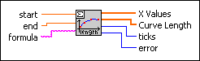
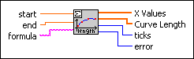
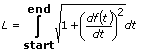

Curve Length VI
Owning Palette: Calculus VIs
Requires: Full Development System
Calculates the curve length of a 1D function between start and end.

 Add to the block diagram Add to the block diagram |
 Find on the palette Find on the palette |
Owning Palette: Calculus VIs
Requires: Full Development System
Calculates the curve length of a 1D function between start and end.

| Add to the block diagram |
Find on the palette |
 |
start is the start point of the interval. The default is 0.0. |
|
end is the end point of the interval. The default is 1.0. |
 |
formula is a string describing the function under investigation. The formula can contain any number of valid variables. |
 |
X Values is the array of all regarded points in the interval (start, end). |
|
Curve Length is an array of the values of the curve length of formula between start and end at all X Values. |
 |
ticks is the time in milliseconds to analyze the formula and to produce the X Values array and the Curve Length array. |
 |
error returns any error or warning from the VI. You can wire error to the Error Cluster From Error Code VI to convert the error code or warning into an error cluster. |
The VI calculates Curve Length of a given function f(t) between start and end using the following equation.

The VI implements this calculation using the Integration VI, which is why the calculations are based on the Runge Kutta method.
Refer to the 1D Explorer VI in the labview\examples\Mathematics\Optimization directory for an example of using the Curve Length VI.
 Open example Find related examples
Open example Find related examples